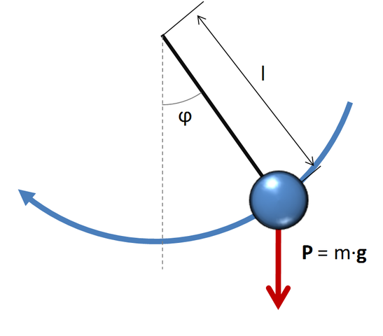

La mecánica es la rama de la física que estudia el movimiento de los objetos y las fuerzas que actúan sobre ellos.
Se divide en tres áreas principales:
Cinemática: Estudia el movimiento sin considerar sus causas.
Dinámica: Analiza las fuerzas que causan el movimiento.
Estática: Se centra en los cuerpos en equilibrio.
¿Qué es la mecánica y por qué es importante?
La mecánica no solo se ocupa de las leyes que rigen el movimiento de los objetos, sino también de cómo se interrelacionan las fuerzas y los cuerpos.
Gracias a la mecánica, podemos comprender y predecir el comportamiento de los objetos en nuestro entorno. Esta rama de la física se utiliza en muchas áreas de la ciencia y la ingeniería.
¿Quiénes descubrieron las leyes de la mecánica?
La mecánica clásica fue formulada principalmente por Isaac Newton, quien desarrolló las tres leyes fundamentales del movimiento y la ley de la gravitación universal en el siglo XVII.
Sin embargo, antes de Newton, filósofos y científicos como Galileo Galilei y Johannes Kepler ya habían realizado importantes descubrimientos relacionados con el movimiento de los cuerpos.
Ámbitos de Aplicación de la Mecánica
Ingeniería: Diseño de maquinaria, vehículos, puentes, etc.
Aeronáutica: Estudio del vuelo y el diseño de aviones.
Construcción: Cálculos estructurales y diseño de edificios.
Medicina: Uso de mecánica para el análisis de fuerzas en el cuerpo humano.
Deportes: Mejora del rendimiento físico y el análisis del movimiento.
Péndulo Estilizado

⚙️ La animación representa un **péndulo oscilante**, un ejemplo clásico de **movimiento armónico simple** en mecánica. ⚙️
Instrucciones para mover el péndulo
1. Haz clic en el péndulo para empezar a moverlo.
2. Puedes arrastrar el péndulo con el mouse para cambiar el ángulo inicial.
3. Cuando el péndulo esté detenido, haz clic en él nuevamente para que empiece a oscilar de nuevo.
Los engranes son elementos fundamentales en el estudio de la mecánica, especialmente en el campo de la transmisión de movimiento.
Se componen de ruedas dentadas que encajan entre sí, permitiendo transferir fuerza y movimiento rotacional de un eje a otro.
Cuando un engrane gira, sus dientes empujan los del engrane contiguo, provocando que este también gire, pero en sentido contrario.
Este principio se utiliza para cambiar la dirección del movimiento, modificar la velocidad de rotación o aumentar/disminuir la fuerza aplicada.
La relación entre el tamaño de los engranes se conoce como relación de transmisión.
Existen varios tipos: engranes cilíndricos, cónicos, helicoidales y planetarios, cada uno con aplicaciones específicas.
Gracias a ellos, podemos ver cómo la mecánica hace posible herramientas cotidianas, desde bicicletas hasta relojes.
🔧 Conclusión: ¿Qué es la mecánica pura?
La mecánica pura es una rama fundamental de la física que estudia el movimiento de los cuerpos y las fuerzas que lo causan. A diferencia de otras disciplinas, la mecánica se enfoca en los principios y leyes universales que rigen el comportamiento de los objetos, sin considerar aspectos como la naturaleza del material o las condiciones ambientales.
Las leyes de la mecánica, como las leyes de Newton y el principio de conservación de la energía, son esenciales para entender cómo los objetos interactúan entre sí y cómo se puede predecir su comportamiento. Estas leyes no solo describen el movimiento de los cuerpos en situaciones cotidianas, sino que también permiten el desarrollo de tecnologías avanzadas en áreas como la ingeniería, la aeronáutica y la física teórica.
La mecánica pura se divide en varias subáreas, como la mecánica clásica, que trata sobre los objetos a escalas macroscópicas y a velocidades relativamente bajas, y la mecánica cuántica, que estudia el comportamiento de las partículas a escalas subatómicas. A través de estas áreas, se abordan fenómenos como la gravedad, la fricción, la dinámica de los cuerpos rígidos y el movimiento de fluidos.
En resumen, la mecánica pura es la base sobre la cual se construye nuestra comprensión del mundo físico. Sus principios no solo explican el movimiento de los objetos, sino que también fundamentan el diseño y funcionamiento de muchas de las tecnologías que usamos en nuestra vida diaria, desde vehículos hasta dispositivos electrónicos.